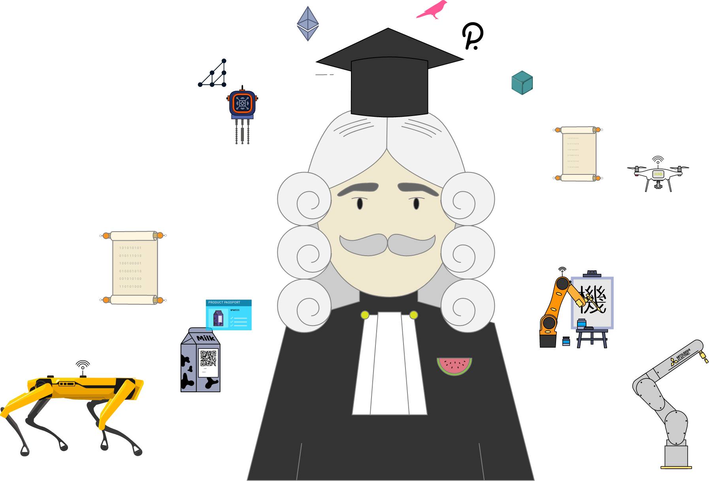

<!DOCTYPE html>
<html lang="en">
    <head>
        <title>Online winter school of Robonomics 2022</title>
        <meta name="description" content="The workshop aims at providing to researchers and developers the possibility to present, discuss, and exchange ideas that address the benefits and challenges of decentralized ledger technologies in robotic applications. The workshop outcome will be novel ideas, challenges and possible solutions of practical and theoretical problems." />

        <meta charset="utf-8" />
        <meta name="viewport" content="width=device-width, initial-scale=1, viewport-fit=cover" />
        
        <meta property="og:type" content="website" />
        <meta property="og:site_name" content="Blockchain applications in robotics and automation" />
        <meta property="og:title" content="Blockchain applications in robotics and automation – IROS 2021 ONLINE WORKSHOP" />
        <meta property="og:description" content="The workshop aims at providing to researchers and developers the possibility to present, discuss, and exchange ideas that address the benefits and challenges of decentralized ledger technologies in robotic applications. The workshop outcome will be novel ideas, challenges and possible solutions of practical and theoretical problems." />
        <meta property="og:image" content="assets/images/og_cover.jpg" />
        <meta property="og:image:width" content="1280" />
        <meta property="og:image:height" content="668" />
        <meta property="og:url" content="http://www.blockchaininroboticsandai.org/" />

        <meta name="twitter:card" content="summary_large_image" />
        <meta name="twitter:title" content="Blockchain applications in robotics and automation – IROS 2021 ONLINE WORKSHOP" />
        <meta name="twitter:image" content="assets/images/og_cover.jpg" />
        <meta name="twitter:description" content="The workshop aims at providing to researchers and developers the possibility to present, discuss, and exchange ideas that address the benefits and challenges of decentralized ledger technologies in robotic applications. The workshop outcome will be novel ideas, challenges and possible solutions of practical and theoretical problems." />

        <link rel="icon" href="" />
        <link rel="icon" type="image/png" sizes="16x16" href="assets/images/favicon-16x16.png" />
        <link rel="icon" type="image/png" sizes="32x32" href="assets/images/favicon-32x32.png" />
        <link rel="icon" type="image/png" sizes="96x96" href="assets/images/favicon-96x96.png" />
        <link rel="apple-touch-icon" type="image/png" sizes="76x76" href="assets/images/favicon-76x76.png" />
        <link rel="apple-touch-icon" type="image/png" sizes="120x120" href="assets/images/favicon-120x120.png" />
        
        <!-- <link rel="preload" href="assets/css/styles.css" as="style" /> -->
        <link rel="stylesheet" href="assets/css/styles.css" />

        <link rel="preload" href="assets/js/bundle.js">
        <script charset="utf-8" src="assets/js/bundle.js"></script>
        <script charset="utf-8" src="assets/js/scripts.js"></script>
    </head>
</html>

<body>
    <div class="navigation">
        <div class="layout">
            <div class="navigation-left">
                <a href="#nav-header" onclick="smScroll(this); return false;">Robonomics Academy</a>
            </div>
            <div class="navigation-right">
                <a href="#nav-scope" onclick="smScroll(this); return false;">Robonomics</a>
                <a href="#nav-idea" onclick="smScroll(this); return false;">School</a>
                <a href="#nav-shedule" onclick="smScroll(this); return false;">Shedule</a>
                <a href="#nav-benefits" onclick="smScroll(this); return false;">Results</a>
                <a href="#nav-contacts" onclick="smScroll(this); return false;">Contacts</a>
                <a href="#nav-register" onclick="smScroll(this); return false;">Register</a>
            </div>
        </div>
    </div>

    <header id="nav-header" class="js-nav register register-pic">
        <div class="layout">
            <div class="register-content animate-inside">
                <h1>Online winter school of Robonomics</h1>
                <p>Free practice and theoretical lessons<br/> from Robonomics team</p>
                <p>Starts Febrary 22, 2022</p>
                <form class="js-form-register">
                    <label class="label">
                        <span>Your email:</span>
                        <input type="email" name="email" required/>
                    </label>
        
                    <label><input type="checkbox" name="agreement" required/> I agree to receive emails</label>

                    <input type="text" name="comment" value="robonomics.academy" hidden/>

                    <input type="submit" value="Register" />

                    <div class="js-form-register--status" aria-hidden="true"></div>
                </form>

                
            </div>
        </div>
    </header>

    <section id="nav-scope" class="js-nav checkinview">
        <div class="layout-narrow animate-inside">
            <h2><span>About Robonomics</span></h2>
            <p>Robonomics is an open-source platform for IoT applications. We support a new generation of internet technologies (web3).</p>
        </div>

        <section class="layout animate-inside">
            <div class="logos tech">
                
                
                
                
                
                
            </div>
        </section>

        <div class="layout-narrow animate-inside">
            <p>Robonomics implements the exchange of technical and economic information in the form of atomic transactions between user applications, IoT services, and complex robotics. Read <a href="https://robonomics.network/intro/" target="_blank" rel="noopener, noreferrer">extended intro</a></a></p>
        </div>
    </section>

    <section id="nav-idea" class="js-nav">
        <div class="layout-narrow">
            <div class="animate-inside">
                <h2><span>About winter school</span></h2>
                <p>We have been holding winter school for three years already and really believe that winter is the best time for online training.</p>
                <p>The third Robonomics Winter School will aim to improve the user experiences of decentralized applications in smart device control tasks, including complex robotic scenarios.</p>
                <p class="highlight-size">The core developers of the Robonomics project, robotics specialists and PhD research scientists offer to pass through compendious experience based on 7 years of work with web 3.0 projects.</p>
                <p>During the school, you will have access to free online lessons and practical tasks, as well as communication with the developers of Robonomics in <a href="https://discord.gg/JpaN2XAmqY" target="_blank" rel="noopener, noreferrer">Discord</a>.</p>
                
                <p><i>Robonomics team gathered offline to make new lessons for you</i></p>
            </div>
        </div>
    </section>

    <section class="js-nav register">
        <div class="layout">
            <div class="register-content animate-inside">
                <h2>Online winter school of Robonomics</h2>
                <p>Free practice and theoretical lessons<br/> from Robonomics team</p>
                <p>Starts Febrary 22, 2022</p>
                <form class="js-form-register">
                    <label class="label">
                        <span>Your email:</span>
                        <input type="email" name="email" required/>
                    </label>
        
                    <label><input type="checkbox" name="agreement" required/> I agree to receive emails</label>

                    <input type="text" name="comment" value="robonomics.academy" hidden/>

                    <input type="submit" value="Register" />

                    <div class="js-form-register--status" aria-hidden="true"></div>
                </form>

                <!--  -->
            </div>
        </div>
    </section>

    <section id="nav-shedule" class="js-nav">
        <div class="shedule layout-narrow">
            <h2><span>Shedule</span></h2>

            <h3 class="highlight-color">February 22 / Lesson 1 / Broadcast through black mirror</h3>
            <p>Greetings from the developers, an overview of the Robonomics platform, and the first practical task - to see your reflection in a black mirror.</p>

            <h3 class="highlight-color">February 23 / Lesson 2 / Robonomics Whitepaper 2022. Chapter 1. At the junction cybernetics and economics.</h3>
            <p>Theoretical lesson, the first of the three chapters based on the updated Robonomics Whitepaper. We dive into an analysis of the main trends of the formation of the 4th industrial revolution, and we will try to determine the most conceptual problems regarding the Internet of Things which need to be resolved in order to move to the next level of economic automation of humanity.</p>

            <h3 class="highlight-color">February 24 / Lesson 3 / Lesson 3. Kusama for home IoT infrastructure.</h3>
            <p>Practical lesson regarding connecting home IoT infrastructure managed by the Robonomics parachain on the Kusama network.</p>

            <h3 class="highlight-color">February 25 / Lesson 4 / Robonomics Whitepaper 2022. Chapter 2. Architecture Robonomics.</h3>
            <p>Theoretical lesson, the second of three chapters based on the updated Robonomics Whitepaper. School participants will learn about the past 10 years of history, and the development of the Internet of things; typical problems which this field of knowledge faces today; and how web3 can be the solution to some of these problems.</p>

            <h3 class="highlight-color">February 26 / Lesson 5 / IoT subscriptions on parachain.</h3>
            <p>Theoretical and practical lesson utilizing subscriptions for the Robonomics parachain. Let’s understand the life cycle of XRT tokens on the parachain, as well as attempt to purchase, activate and use IoT subscriptions on the Robonomics Parachain.</p>

            <h3 class="highlight-color">February 27 / Full day at leisure</h3>
            <p>The penultimate day, this day will be left free. It is intended to be used as additional time for participants to go over lessons you might have missed.</p>

            <h3 class="highlight-color">February 28 / Final day winter school.</h3>
            <p>A summation of the results of the Winter School 2022. Certificates for Active participants and we will tell you about the upcoming launch Ambassador Program, conditions for participation in the grant program, as well as the launch of the Robonomics Academy.</p>
            
        </div>
        
    </section>

    <section id="nav-benefits" class="js-nav">
        <div class="layout-narrow animate-inside">
            <h2><span>What you can get</span></h2>

            <ul class="list-plus">
                <li>Practice and improve your skills in web3 development and robotic communications</li>
                <li>Learn about the Internet of things; typical problems which this field of knowledge faces today; and how web3 can be the solution to some of these problems</li>
                <li>Get Certificates</li>
                <li>Know more about upcoming launch Ambassador Program, conditions for participation in the Grant program</li>
              </ul>
        </div>
    </section>


    <section id="nav-register" class="js-nav register">
        <div class="layout">
            <div class="register-content animate-inside">
                <h2>Online winter school of Robonomics</h2>
                <p>Free practice and theoretical lessons<br/> from Robonomics team</p>
                <p>Starts Febrary 22, 2022</p>
                <form class="js-form-register">
                    <label class="label">
                        <span>Your email:</span>
                        <input type="email" name="email" required/>
                    </label>
        
                    <label><input type="checkbox" name="agreement" required/> I agree to receive emails</label>

                    <input type="text" name="comment" value="robonomics.academy" hidden/>

                    <input type="submit" value="Register" />

                    <div class="js-form-register--status" aria-hidden="true"></div>
                </form>

                <!--  -->
            </div>
        </div>
    </section>
    
    <section id="nav-contacts" class="js-nav">
        <div class="layout-narrow">
            <h2><span>Contacts</span></h2>

            <div class="contact">
                <div>
                    
                </div>
                <div>
                    <h4><a href="https://scholar.google.ru/citations?user=jo5zE10AAAAJ" target="_blank" rel="noopener, noreferrer">Ivan Berman</a></h4>
                    <p>If you have any questions drop an email to berman@robonomics.network</p>
                </div>
            </div>
            
        </div>
    </section>

</body>
